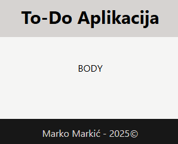

Programsko inženjerstvo
Primjer kolokvija #1
Kolokvij nosi ukupno 40 bodova i piše se 120 minuta.
Zadatak je napraviti implementaciju jedne To-Do aplikacije za praćenje i kategorizaciju zadataka.
Zadatak #1 (6 bodova)
-
(1 bod) Potrebno je kreirati novi Vue 3 projekt ili ga preuzeti sa repozitorija. Očistiti ga i opcionalno instalirati Tailwind ako ćete ga korisitit (preporučuje se).
-
(3 boda) U
App.vuepotrebno je ubaciti 3 komponente:ToDoHeader- sadrži naslov projektaToDoBody- sadrži To-Do listeToDoFooter- sadrži vaše ime i prezime
-
(1 bod)
ToDoHeader.vuetreba sadržavati<slot>element u kojem će se prikazati naslov projekta izApp.vue. -
(1 bod)
ToDoFooter.vuetreba sadržavati:<slot>element u kojem će se prikazati vaše ime i prezime izApp.vue- prikaz trenutne godine, izračunate unutar Template Syntax
- Hint:
new Date().getFullYear()
- Hint:
Primjer:

Zadatak #2 (6 bodova)
Unutar ToDoBody komponente treba dodati komponentu ToDoStavka.
Podaci za testiranje:
stavke = [
{
opis: 'Implementirati uklanjanje',
završeno: false,
prioritet: 1,
},
{
opis: 'Dodati text edit',
završeno: true,
prioritet: 2,
},
{
opis: 'Implementirati pomicanje',
završeno: false,
prioritet: 4,
},
{
opis: 'Dodati date',
završeno: false,
prioritet: 5,
},
{
opis: 'Implementirati promjenu boje',
završeno: false,
prioritet: 6,
}
]
-
(1 bod)
ToDoStavkakomponenta treba sadržavati sljedeće definirane parametre spremljene u varijablu props:- opis - string
- završeno - boolean
- prioritet - number
-
(1 bod) Ako je proslijeđena vrijednost parametra završeno:
false- prikazati prazan kvadratić s obrubomtrue- prikazati ispunjen zeleni kvadratić
-
(1 bod) Prikazati opis, ako je proslijeđena vrijednost parametra završeno:
false- prikazati opis bez stilatrue- prikazati precrtan opis
-
(1 bod) Unutar
ToDoStavkakomponente treba definirati 2 proslijeđena događaja (emit):ažurirajOpisažurirajZavršeno
-
(2 bod) Ako kliknemo na kvadratić, trebamo proslijediti događaj ažurirajZavršeno sa odgovarajućom boolean vrijednošću, zatim ga trebamo dohvatiti i ažurirati vrijednost ključa završeno stavke u roditelju
- Hint:
emit - Možemo pisati i pozivati funkcije u
<script>bloku ili direktno izvršiti kôd u<template>bloku
- Hint:
Zadatak #3 (12 bodova)
-
(1 bod) Unutar
ToDoStavkakomponente treba dodati input element tipa text srefatributom koji ima vrijednost unosRef -
(3 boda) Potrebno je dodati sljedeće unutar
ToDoStavkakomponente:
- reaktivnu boolean varijablu uređivanje
- reaktivnu string varijablu noviOpis i vezati je na input element
- varijablu unos koja koristi
useTemplateRef()funckiju s vrijednosti unosRef computedfunkciju dopuštenoUređivanje koja vraća:true- ako je uređivanje uključeno i stavka nije završenafalse- u suprotnom
- (2 bod) Ako je vrijednost funkcije dopuštenoUređivanje:
false- prikazati opis koristećiv-ifdirektivu i postaviti maksimalnu širinu inputa na0pxkoristeći vezanu klasu ili stiltrue- sakriti opis koristećiv-ifdirektivu i maknuti maksimalnu širinu inputa koristeći vezanu klasu ili stil
- (4 boda) Potrebno je dodati sljedeće dvije funkcije unutar
ToDoStavkakomponente:
uključiUređivanje()- omogućuje uređivanje opisa tako da postavi vrijednost novog opisa na trenutnu vrijednost i stavlja input u focus nakon što uključi uređivanje- ako je završeno
true, treba izaći iz funkcije - postavlja vrijednost varijable
unosu fokus koristećifocus()metodu
- ako je završeno
isključiUređivanje()- prekida uređivanje opisa tako da isključi uređivanje te proslijedi događaj ažuriraj opis roditelju koji onda ažurira vrijednost ključa opis stavke- proslijeđuje događaj ažurirajOpis s argumentom noviOpis
- (2 bod) Potrebno je dodati sljdeća dva događaja:
@dblclickna element opisa koji poziva funkcijuuključiUređivanje()@focusoutna element inputa koji poziva funkcijuisključiUređivanje()
Primjer:

Primjer strukture ToDoStavka komponente:
<template>
<div>
<div>
<div></div> <!--Kvadrat s obrubom-->
<div></div> <!--Popunjen kvadrat-->
</div>
<span>
<!--Opis-->
</span>
<input/> <!--Novi Opis-->
</div>
</template>
Zadatak #4 (8 bodova)
- (1 bod) U komponentu
ToDoBodydodati reaktivno polje stavke. - (1 bod) Koristeći
v-fordirektivu prikazatiToDoStavkakomponente. - (2 boda) Sortirati stavke po prioritetu, stavka s većim prioritetom se nalazi pri vrhu.
- (1 bod) U komponentu
ToDoStavkadodati prikaz prioriteta na početak. I<slot>element na kraj. - (3 boda) Sada možemo unutar elementa
ToDoStavkaubaciti sljedeća3dugma:
- Dugme
+koje povećava prioritet za jedan kada se klikne - Dugme
-koje smanjuje prioritet za jedan kada se klikne - Dugme
xkoje uklanja stavku iz liste
Primjer strukture ToDoStavka komponente:
<template>
<div>
<span>
<!--Prioritet-->
</span>
<div>
<div></div> <!--Kvadrat s obrubom-->
<div></div> <!--Popunjen kvadrat-->
</div>
<span>
<!--Opis-->
</span>
<input/> <!--Novi Opis-->
<slot/> <!--Slot-->
</div>
</template>
Primjer strukture ToDoBody komponente:
<template>
<div>
<div>
<ToDoStavka v-for>
<button> + </button>
<button> - </button>
<button> x </button>
</ToDoStavka>
</div>
</div>
</template>
Primjer:

Zadatak #5 (8 bodova)
- (1 bod) Ispod
<ToDoStavka>elementa dodati dugme koje će ubaciti novu praznu stavku na kraj liste s vrijednostima:
- opis: Napiši opis...
- završeno:
false - prioritet:
0
- (2 boda) Napravite composable funkciju
useBrojačStavki()koja ima reaktivnu varijablu brojač i funkcijupostavi() - (3 boda) Zatim napravite watch funkciju unutar
ToDoBodykomponente koja prati varijablu stavke, svaki put kad se promjeni treba ažurirati brojač.Watchfunkcija se treba pokrenuti pri montiranju. Prikažite brojač unutarToDoHeaderkomponente. - (2 bod) Animirajte dodavanje i uklanjanje stavki.
Primjer:

Predajete sljedeću datoteku:
- ZIP datoteka cijelog projekta bez
node_modulesmape